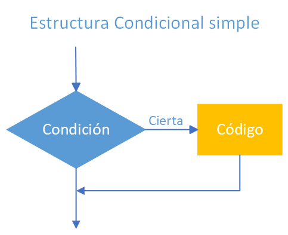
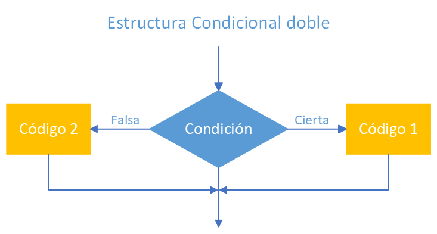

Introducción a Python
Las estructuras selectivas permiten que un programa tome decisiones y ejecute unas instrucciones u otras dependiendo de si se cumple una condición.
En Python utilizamos principalmente:
ifif ... elseif ... elif ... elsematch ... case
1. Código completo
2. Selectiva simple: if
Comenzamos leyendo la edad del usuario:
Como input() devuelve una cadena, utilizamos int() para convertir el dato introducido a un número entero.
Después aparece la estructura:
La expresión:
es una condición. Su resultado solo puede ser True o False.
Si la edad es mayor o igual que 18, se ejecutan las instrucciones indentadas debajo del if.
Si no se cumple la condición, Python las salta y continúa ejecutando el programa.
2.1. La importancia de la indentación
Observa:
Las dos primeras llamadas a print() pertenecen al if porque están indentadas.
En cambio:
está fuera del bloque, por lo que se ejecutará siempre, independientemente de la edad introducida.
La indentación delimita los bloques
En Python, las instrucciones que pertenecen a un if, else, bucle u otra estructura deben aparecer indentadas.
Sobre el comentario del ejemplo
En el script aparece el comentario ## Error indentación junto a print("puede jugar"), pero esa línea tiene la misma indentación que la instrucción anterior y, tal como está escrita, pertenece correctamente al bloque if.
Un error se produciría, por ejemplo, si una de las instrucciones tuviese una indentación incoherente.
3. if-else: elegir entre dos alternativas
Cuando queremos ejecutar una acción si se cumple una condición y otra diferente si no se cumple, utilizamos if ... else.
saldo = int(input("saldo: "))
edad = int(input("edad: "))
if (edad >= 18 and saldo > 0) or (saldo > 100000):
print("Puede jugar")
else:
print("no puede jugar")
print("Fin selectiva")
La estructura general es:
if condicion:
# instrucciones si la condición es verdadera
else:
# instrucciones si la condición es falsa
Solo se ejecutará uno de los dos bloques.
Después de ambos aparece:
Como no está indentado dentro del if ni del else, se ejecuta siempre.
4. Condiciones compuestas con and y or
La condición anterior es más compleja:
Aquí aparecen dos operadores lógicos.
4.1. Operador and
Con and, las dos condiciones deben ser verdaderas:
Se cumple solamente cuando:
- la persona tiene al menos 18 años;
- y además su saldo es mayor que 0.
4.2. Operador or
Con or, basta con que se cumpla una de las condiciones.
La condición completa puede entenderse así:
Por tanto, el programa permitirá continuar si se cumple cualquiera de esos dos grupos de condiciones.
Usar paréntesis ayuda a leer
Aunque en algunos casos Python podría interpretar correctamente la expresión sin paréntesis, utilizarlos ayuda a ver claramente qué condiciones se están agrupando.
5. Selectivas anidadas
Una estructura selectiva puede contener otra estructura selectiva.
El ejemplo compara dos números:
a = int(input("valor de a:"))
b = 200
if b > a:
print(f"{b} es mayor que {a}")
else:
if b < a:
print(f"{a} es mayor que {b}")
else:
print(f"{a} es igual a {b}")
Primero se comprueba:
Si se cumple, ya sabemos que b es mayor.
Si no se cumple, entramos en el else y hacemos otra comprobación:
Si tampoco se cumple esta segunda condición, solo queda una posibilidad: ambos números son iguales.
Este tipo de construcción se denomina selectiva anidada porque hay un if dentro de otro bloque.
6. Simplificar con elif
Python dispone de elif, abreviatura de else if.
El ejemplo anterior puede escribirse así:
if b > a:
print(f"{b} es mayor que {a}")
elif b < a:
print(f"{a} es mayor que {b}")
else:
print(f"{a} es igual a {b}")
Esta versión expresa exactamente las mismas posibilidades:
bes mayor quea.bes menor quea.- Ambos son iguales.
Normalmente resulta más clara y evita añadir niveles innecesarios de indentación.
Python comprueba las condiciones de arriba hacia abajo y ejecuta el bloque correspondiente a la primera que sea verdadera.
Si ninguna se cumple, ejecuta el else.
7. Selector múltiple con match
Cuando queremos comparar un valor con varias opciones concretas podemos utilizar match.
opcion = int(input("Seleccione una opción: "))
match opcion:
case 0:
print("Ha seleccionado opción 0")
print("procedemos opción 1")
case 1:
print("Ha seleccionado opción 1")
print("procedemos opción 2")
case _:
print("Opción por defecto")
print("No ha indicado ninguna opción contemplada")
Python toma el valor almacenado en opcion y busca un case que coincida.
Si el usuario introduce 0, se ejecuta case 0. Si introduce 1, se ejecuta case 1.
Para cualquier otro valor se ejecuta:
El guion bajo _ representa aquí el caso por defecto.
7.1. match frente a muchos elif
Un menú también podría escribirse utilizando varios elif:
Cuando tenemos muchas opciones concretas, match puede resultar más legible.
Versión de Python
La sentencia match está disponible a partir de Python 3.10.
8. Anexo enlaces y figuras
https://www.w3schools.com/python/python_conditions.asp

